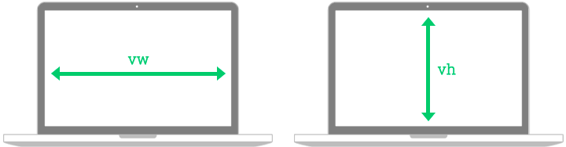

Les unitées vw et vh sont des unités relatives à la fenêtre (viewport). Leur nom est en fait un acronyme:
- vw: viewport width (largeur de fenêtre)
- vh: viewport height (hauteur de fenêtre)
Elles fonctionnent sur le même principe que les pourcentages (%), mais plutôt que de se baser sur la dimension de leur parent, elles se basent plutôt sur la dimension de la fenêtre.
Par exemple, pour qu'un élément prenne la moitié de la largeur de la fenêtre, il est possible d'utiliser:
À priori, le résultat peut sembler identique à:
Car si les deux éléments sont enfants de body (body prenant par défaut toute la largeur de la fenêtre) les deux auront la même dimension.
Afin de bien illustrer la différence. Imaginons que nous avons une fenêtre d'une largeur de 1000px. À l'intérieur de celle-ci, un élément de 200px de large contenant deux enfants.
- Un premier avec une largeur de 50vw
- Un deuxième avec une largeur de 50%
Le premier se basant sur la dimension de la fenêtre mesurera donc 500px. Tandis que le deuxième se basant sur son parent mesurera 100px.
Tout comme vw et vh, vmin et vmax sont des unités relatives à la fenêtre (viewport). Leur nom correspond à:
- vmin viewport minimum (plus petit côté de la fenêtre)
- vmax viewport maximum (plus grand côté de la fenêtre)
Plutôt que de se baser directement sur un axe spécifique, la largeur ou la hauteur (width/height), ces unités alternent entre les deux selon le contexte.
vmin calcule donc l'équivalent du vw et vh et retourne le plus petit résultat. Tandis que vmax fait l'opposé et retourne le plus grand résultat.
Par exemple, pour créer un élément carré couvrant un maximum de la fenêtre, mais ne dépassant pas de celle-ci, il serait possible d'utiliser:
Plutôt que de spécifier une mesure directement, il est possible d'utiliser la fonction CSS calc() afin de combiner différentes mesures et d'en retourner le résultat. Cette approche est particulièrement utile pour combiner des mesures relatives (%, vw, etc.) avec des mesures absolues (px).
Par exemple, si un élément doit couvrir toute la largeur de son parent, moins 50px, il est impossible d'y arriver avec une unité de base. Cependant, il est possible d'y arriver en combinant l'unité relative 100% et l'unité absolue 50px.
Les opérateurs mathématiques de base (+, -, *, /) sont permis entre les parenthèses de calc()
❌ calc(100%-50px);
✅ calc(100% - 50px);
Les fonctions CSS min() et max() permettent de retourner le plus petit ou le plus grand résultat parmi différentes valeurs.
Par exemple, pour s'assurer qu'un texte ne soit jamais plus petit que 12px, afin qu'il reste toujours lisible, il est possible d'utiliser:
La fonction valide donc laquelle de ces 2 untiés retourne le plus grand résultat et ne garde que cette valeur.
Si l'élément est dans un parent ayant un font-size de:
- 50px: 12px < 0.5em (25px) ➡️ 25px
- 20px: 12px > 0.5em (10px) ➡️ 12px
La fonction CSS clamp() ressemble aux fonctions min() et max(), mais contrairement à celles-ci, elle offre à la fois une valeur minimale et maximale.
Par exemple, pour qu'un texte ne soit jamais plus petit que 12px, ni plus grand que 20px, il est possible d'utiliser:
La fonction retourne la valeur centrale (0.5em) jusqu'à concurrence de sa valeur plancher (12px) ou sa valeur plafond (20px).
Si l'élément est dans un parent ayant un font-size de:
- 50px 12px < 0.5em (25px) = 25px > 20px ➡️ 20px
- 20px 12px > 0.5em (10px) = 12px < 20px ➡️ 12px